Ví dụ ProudNet UE5
Hướng dẫn toàn diện để triển khai game nhiều người chơi sử dụng thư viện mạng ProudNet và Unreal Engine 5. Bao gồm hệ thống chat, mạng nhân vật và các tính năng nhiều người chơi nâng cao.
üìã M·ª•c l·ª•c
- 1. Thiết lập dự án
Chuẩn bị và cấu hình dự án Unreal Engine 5 để tích hợp ProudNet
- 2. Tạo Chat cục bộ
Tạo hệ thống chat cục bộ cơ bản để kiểm tra và làm nền tảng
- 3. Tạo Chat trực tuyến
Triển khai chức năng chat mạng sử dụng ProudNet
- 4. Triển khai nhân vật Mirage
Xây dựng nhân vật mirage với các tính năng gameplay nâng cao
- 5. Tích hợp trực tuyến nhân vật Mirage
Tích hợp nhân vật mirage với mạng ProudNet cho gameplay nhiều người chơi
- 6. Build và kiểm tra dự án cuối cùng
Hoàn thiện dự án, build và quy trình kiểm tra toàn diện
1. Thiết lập dự án
Phần này bao gồm thiết lập ban đầu và cấu hình cần thiết để tạo dự án Unreal Engine 5 với ProudNet được kích hoạt.
1.1. Cài đặt ProudNet
- Cài đặt phiên bản mới nhất từ kho lưu trữ https://github.com/Nettention/ProudNet.
- Đường dẫn cài đặt mặc định là "C:\Program Files (x86)\Nettention\ProudNet". Hướng dẫn này và plugin UE5 được cấu hình cho đường dẫn này, vì vậy nếu bạn thay đổi đường dẫn cài đặt, bạn sẽ cần sửa đổi mã nguồn plugin và xem xét cẩn thận hướng dẫn.
1.2. Cấu hình dự án Visual Studio
- Tạo một dự án trống trong Visual Studio
- Hướng dẫn này sử dụng đường dẫn/tên sau.

Tạo dự án Visual Studio
- Thêm 3 mục mới vào dự án chat_server: main.cpp, setting.cpp, setting.h.

Thêm tệp dự án

Cấu trúc dự án
- Sửa đổi thuộc tính của dự án chat_server.
- "C/C++ - Language - C++ Language Standard"
- Chọn "ISO C++20 Standard (/std:C++20)" từ dropdown
- "C/C++ - General - Additional Include Directories"
- Chọn <Edit…> từ dropdown
- Thêm đường dẫn sau trong cửa sổ popup
C:\Program Files (x86)\Nettention\ProudNet\include
- "Linker - General - Additional Library Directories"
- Chọn <Edit…> từ dropdown
- Thêm đường dẫn sau trong cửa sổ popup
C:\Program Files (x86)\Nettention\ProudNet\lib\$(Platform)\v140\$(Configuration)
- "Linker - Input - Additional Dependencies"
- Chọn <Edit…> từ dropdown
- Thêm các tên tệp sau trong cửa sổ popup
ProudNetServer.lib ProudNetClient.lib
- "Build Events - Post-Build Event - Command Line"
- Chọn <Edit…> từ dropdown
- Thêm các lệnh sau trong cửa sổ popup
xcopy /Y "C:\Program Files (x86)\Nettention\ProudNet\lib\$(Platform)\v140\$(Configuration)\libcrypto-3-x64.dll" "$(OutDir)" xcopy /Y "C:\Program Files (x86)\Nettention\ProudNet\lib\$(Platform)\v140\$(Configuration)\libssl-3-x64.dll" "$(OutDir)"
- "C/C++ - Language - C++ Language Standard"
- Nhập mã vào từng tệp nguồn.
- setting.h (diff)
+ #pragma once + + namespace ProudSetting + { + namespace CHAT + { + extern const ::Proud::Guid version; + extern const int server_port; + } + } - setting.cpp (diff)
+ #include <ProudNetClient.h> + #include "setting.h" + + namespace ProudSetting + { + namespace CHAT + { + const ::Proud::PNGUID guid = { 0x3ae33249, 0xecc6, 0x4980, { 0xbc, 0x5d, 0x7b, 0xa, 0x99, 0x9c, 0x7, 0x39 } }; + const ::Proud::Guid version = ::Proud::Guid(guid); + const int server_port = 33337; + } + } - main.cpp (diff)
+ #include <iostream> + #include <format> + #include <memory> + + #include <ProudNetServer.h> + #include "setting.h" + + std::shared_ptr<Proud::CNetServer> net_server; + + int main() + { + net_server = std::shared_ptr<Proud::CNetServer>(Proud::CNetServer::Create()); + + net_server->OnClientJoin = [](Proud::CNetClientInfo* clientInfo) + { + std::cout << "Client[" << (int)clientInfo->m_HostID << "] connected.\n"; + }; + net_server->OnClientLeave = [](Proud::CNetClientInfo* clientInfo, Proud::ErrorInfo* error, const Proud::ByteArray byte_arr) + { + std::cout << "Client[" << (int)clientInfo->m_HostID << "] disconnected.\n"; + }; + + Proud::CStartServerParameter start_param; + start_param.m_protocolVersion = ProudSetting::CHAT::version; + start_param.m_tcpPorts.Add(ProudSetting::CHAT::server_port); + + try + { + net_server->Start(start_param); + } + catch (Proud::Exception& error) + { + std::cout << "Server start failed: " << error.what() << endl; + return 0; + } + + std::cout << ("Server started. Enterable commands:\n"); + std::cout << ("-q : Quit.\n"); + std::string input; + while (true) + { + std::cin >> input; + if (input[0] == '-') + { + if (input == "-q") + break; + } + } + + std::cout << "Stopping server...\n"; + net_server->Stop(); + net_server = nullptr; + std::cout << "Server stopped.\n"; + return 0; + }
Mã hoàn chỉnh
- setting.h
#pragma once namespace ProudSetting { namespace CHAT { extern const ::Proud::Guid version; extern const int server_port; } } - setting.cpp
#include <ProudNetClient.h> #include "setting.h" namespace ProudSetting { namespace CHAT { const ::Proud::PNGUID guid = { 0x3ae33249, 0xecc6, 0x4980, { 0xbc, 0x5d, 0x7b, 0xa, 0x99, 0x9c, 0x7, 0x39 } }; const ::Proud::Guid version = ::Proud::Guid(guid); const int server_port = 33337; } } - main.cpp
#include <iostream> #include <format> #include <memory> #include <ProudNetServer.h> #include "setting.h" std::shared_ptr<Proud::CNetServer> net_server; int main() { net_server = std::shared_ptr<Proud::CNetServer>(Proud::CNetServer::Create()); net_server->OnClientJoin = [](Proud::CNetClientInfo* clientInfo) { std::cout << "Client[" << (int)clientInfo->m_HostID << "] connected.\n"; }; net_server->OnClientLeave = [](Proud::CNetClientInfo* clientInfo, Proud::ErrorInfo* error, const Proud::ByteArray byte_arr) { std::cout << "Client[" << (int)clientInfo->m_HostID << "] disconnected.\n"; }; Proud::CStartServerParameter start_param; start_param.m_protocolVersion = ProudSetting::CHAT::version; start_param.m_tcpPorts.Add(ProudSetting::CHAT::server_port); try { net_server->Start(start_param); } catch (Proud::Exception& error) { std::cout << "Server start failed: " << error.what() << endl; return 0; } std::cout << ("Server started. Enterable commands:\n"); std::cout << ("-q : Quit.\n"); std::string input; while (true) { std::cin >> input; if (input[0] == '-') { if (input == "-q") break; } } std::cout << "Stopping server...\n"; net_server->Stop(); net_server = nullptr; std::cout << "Server stopped.\n"; return 0; }
- setting.h (diff)
- Build và chạy dự án (F5) để xem màn hình sau.

Màn hình Server đang chạy
1.3. Cấu hình dự án Unreal Engine
- Thêm Infima Games' Free FPS Template vào thư viện của bạn.
- Tạo dự án mẫu theo quy trình dưới đây.
- Khởi chạy Epic Games Launcher
- Điều hướng đến tab Unreal Engine
- Điều hướng đến tab Library
- Nhấp "Create Project" cho "Free FPS Template & Tutorial" trong danh sách thư viện Fab
- Thay đổi tên và thư mục, sau đó nhấp Create
- Hướng dẫn này sử dụng tên và đường dẫn sau.

Tạo dự án Unreal
- Tạo lớp C++ theo quy trình dưới đây.
- Thanh công cụ trên - Tools - New C++ Class

Menu tạo lớp C++
- Show All Classes, sau đó chọn GameInstanceSubsystem

Chọn GameInstanceSubsystem
- Class Type - Chọn Public và nhập tên lớp, sau đó tạo lớp
- Hướng dẫn này sử dụng GissChatNet.

Nhập tên lớp
- Hướng dẫn này sử dụng GissChatNet.
- Thanh công cụ trên - Tools - New C++ Class
- Tạo giải pháp VS cho dự án Unreal theo quy trình dưới đây.
- Đóng trình chỉnh sửa Unreal Engine.
- Điều hướng đến thư mục dự án Unreal.
- Nhấp chuột phải vào PdnUE5ExampleClient.uproject và chọn Generate Visual Studio project files
- Thay đổi dự án khởi động (khuyến nghị)
- Hình ảnh hướng dẫn

Thay đổi dự án khởi động
- Áp dụng plugin UE5 ProudNet theo quy trình dưới đây.
- Mở thư mục dự án Unreal.
Phím tắt: Epic Games Launcher → My Projects → Nhấp chuột phải vào dự án → Show in Folder
- Giải nén tệp sau và đặt vào thư mục Plugins.
Tạo thư mục Plugins mới nếu chưa tồn tại.
ProudNet UE5 Lib Linker Plugin.zip
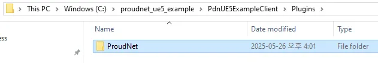Cấu trúc thư mục Plugin
- Tạo lại giải pháp dự án Visual Studio.
- Đóng Visual Studio IDE.
- Nhấp chuột phải vào PdnUE5ExampleClient.uproject và chọn Generate Visual Studio project files
- Sửa đổi mã PdnUE5ExampleClient.Build.cs.
- Hình ảnh hướng dẫn

Vị trí tệp Build.cs
- Sửa đổi
// Fill out your copyright notice in the Description page of Project Settings. using UnrealBuildTool; public class PdnUE5ExampleClient : ModuleRules { public PdnUE5ExampleClient(ReadOnlyTargetRules Target) : base(Target) { PCHUsage = PCHUsageMode.UseExplicitOrSharedPCHs; - PublicDependencyModuleNames.AddRange(new string[] { "Core", "CoreUObject", "Engine", "InputCore" }); + PublicDependencyModuleNames.AddRange(new string[] { "Core", "CoreUObject", "Engine", "InputCore", "ProudNet" }); PrivateDependencyModuleNames.AddRange(new string[] { }); // Uncomment if you are using Slate UI // PrivateDependencyModuleNames.AddRange(new string[] { "Slate", "SlateCore" }); // Uncomment if you are using online features // PrivateDependencyModuleNames.Add("OnlineSubsystem"); // To include OnlineSubsystemSteam, add it to the plugins section in your uproject file with the Enabled attribute set to true } } - Mã hoàn chỉnh
// Fill out your copyright notice in the Description page of Project Settings. using UnrealBuildTool; public class PdnUE5ExampleClient : ModuleRules { public PdnUE5ExampleClient(ReadOnlyTargetRules Target) : base(Target) { PCHUsage = PCHUsageMode.UseExplicitOrSharedPCHs; PublicDependencyModuleNames.AddRange(new string[] { "Core", "CoreUObject", "Engine", "InputCore", "ProudNet" }); PrivateDependencyModuleNames.AddRange(new string[] { }); // Uncomment if you are using Slate UI // PrivateDependencyModuleNames.AddRange(new string[] { "Slate", "SlateCore" }); // Uncomment if you are using online features // PrivateDependencyModuleNames.Add("OnlineSubsystem"); // To include OnlineSubsystemSteam, add it to the plugins section in your uproject file with the Enabled attribute set to true } }
- Hình ảnh hướng dẫn
- Mở thư mục dự án Unreal.
- Sửa đổi mã GissChatNet.h và .cpp.
- Hình ảnh hướng dẫn

Tệp GissChatNet
- GissChatNet.h (diff)
// Fill out your copyright notice in the Description page of Project Settings. #pragma once #include "CoreMinimal.h" #include "Subsystems/GameInstanceSubsystem.h" #include "GissChatNet.generated.h" /** * */ UCLASS() class PDNUE5EXAMPLECLIENT_API UGissChatNet : public UGameInstanceSubsystem { GENERATED_BODY() + private: + virtual void Initialize(FSubsystemCollectionBase& Collection) override; + virtual void Deinitialize() override; }; - GissChatNet.cpp (diff)
// Fill out your copyright notice in the Description page of Project Settings. #include "GissChatNet.h" + #include <format> + #include <functional> + + #include <ProudNetClient.h> + #include "C:/proudnet_ue5_example/PdnUE5ExampleServer/chat_server/setting.h" + #include "C:/proudnet_ue5_example/PdnUE5ExampleServer/chat_server/setting.cpp" + + static void LogPrint(const std::string& str) + { + UE_LOG(LogTemp, Log, TEXT("%s"), UTF8_TO_TCHAR(str.c_str())); + } + + static Proud::CriticalSection global_critical_section; + static std::shared_ptr<Proud::CNetClient> net_client; + static FDelegateHandle update_handle; + + void UGissChatNet::Initialize(FSubsystemCollectionBase& Collection) + { + net_client = std::shared_ptr<Proud::CNetClient>(Proud::CNetClient::Create()); + + bool connected = false; + + net_client->OnJoinServerComplete = [&](Proud::ErrorInfo* info, const Proud::ByteArray& replyFromServer) + { + Proud::CriticalSectionLock lock(global_critical_section, true); + + if (info->m_errorType == Proud::ErrorType::Ok) + { + auto log = std::format("Succeed to connect server. Allocated hostID={}\n", (int)net_client->GetLocalHostID()); + LogPrint(log); + + connected = true; + } + else + { + auto log = "Failed to connect to server.\n"; + LogPrint(log); + } + }; + + net_client->OnLeaveServer = [&](Proud::ErrorInfo* errorInfo) + { + Proud::CriticalSectionLock lock(global_critical_section, true); + + auto log = std::format("OnLeaveServer. {} \n", StringT2A(errorInfo->m_comment).GetString()); + LogPrint(log); + + connected = false; + if (update_handle.IsValid()) + { + FCoreDelegates::OnEndFrame.Remove(update_handle); + update_handle.Reset(); + } + }; + + Proud::CNetConnectionParam connection_param; + connection_param.m_protocolVersion = ProudSetting::CHAT::version; + connection_param.m_serverIP = _PNT("localhost"); + connection_param.m_serverPort = ProudSetting::CHAT::server_port; + connection_param.m_closeNoPingPongTcpConnections = false; + + net_client->Connect(connection_param); + + update_handle = FCoreDelegates::OnEndFrame.AddStatic([]() + { + if (net_client) + net_client->FrameMove(); + } + ); + } + + void UGissChatNet::Deinitialize() + { + net_client->Disconnect(); + net_client = nullptr; + } - Complete Code
- GissChatNet.h
// Fill out your copyright notice in the Description page of Project Settings. #pragma once #include "CoreMinimal.h" #include "Subsystems/GameInstanceSubsystem.h" #include "GissChatNet.generated.h" /** * */ UCLASS() class PDNUE5EXAMPLECLIENT_API UGissChatNet : public UGameInstanceSubsystem { GENERATED_BODY() private: virtual void Initialize(FSubsystemCollectionBase& Collection) override; virtual void Deinitialize() override; }; - GissChatNet.cpp
// Fill out your copyright notice in the Description page of Project Settings. #include "GissChatNet.h" #include <format> #include <functional> #include <ProudNetClient.h> #include "C:/proudnet_ue5_example/PdnUE5ExampleServer/chat_server/setting.h" #include "C:/proudnet_ue5_example/PdnUE5ExampleServer/chat_server/setting.cpp" static void LogPrint(const std::string& str) { UE_LOG(LogTemp, Log, TEXT("%s"), UTF8_TO_TCHAR(str.c_str())); } static Proud::CriticalSection global_critical_section; static std::shared_ptr<Proud::CNetClient> net_client; static FDelegateHandle update_handle; void UGissChatNet::Initialize(FSubsystemCollectionBase& Collection) { net_client = std::shared_ptr<Proud::CNetClient>(Proud::CNetClient::Create()); bool connected = false; net_client->OnJoinServerComplete = [&](Proud::ErrorInfo* info, const Proud::ByteArray& replyFromServer) { Proud::CriticalSectionLock lock(global_critical_section, true); if (info->m_errorType == Proud::ErrorType::Ok) { auto log = std::format("Succeed to connect server. Allocated hostID={}\n", (int)net_client->GetLocalHostID()); LogPrint(log); connected = true; } else { auto log = "Failed to connect to server.\n"; LogPrint(log); } }; net_client->OnLeaveServer = [&](Proud::ErrorInfo* errorInfo) { Proud::CriticalSectionLock lock(global_critical_section, true); auto log = std::format("OnLeaveServer. {} \n", StringT2A(errorInfo->m_comment).GetString()); LogPrint(log); connected = false; if (update_handle.IsValid()) { FCoreDelegates::OnEndFrame.Remove(update_handle); update_handle.Reset(); } }; Proud::CNetConnectionParam connection_param; connection_param.m_protocolVersion = ProudSetting::CHAT::version; connection_param.m_serverIP = _PNT("localhost"); connection_param.m_serverPort = ProudSetting::CHAT::server_port; connection_param.m_closeNoPingPongTcpConnections = false; net_client->Connect(connection_param); update_handle = FCoreDelegates::OnEndFrame.AddStatic([]() { if (net_client) net_client->FrameMove(); } ); } void UGissChatNet::Deinitialize() { net_client->Disconnect(); net_client = nullptr; }
- GissChatNet.h
- Hình ảnh hướng dẫn
- Kiểm tra
- Build và chạy chat_server từ PdnUE5ExampleServer.

chat_server Execution
- Build PdnUE5ExampleClient và chạy level trong trình chỉnh sửa Unreal Engine.

Thực thi Unreal Editor
- Thành công nếu client và server kết nối như hiển thị bên dưới.

Kết nối Server thành công

Kết nối Client thành công
- Build và chạy chat_server từ PdnUE5ExampleServer.
2. Tạo Chat cục bộ
Phần này bao gồm tạo cửa sổ chat cục bộ và triển khai chức năng chat cơ bản trong Unreal Engine 5.
2.1. Tạo Widget Chat
- Tạo blueprint widget BP_ChatWidget theo quy trình dưới đây
- Nhấp chuột phải vào vùng trống trong Content Browser để mở menu ngữ cảnh.
- Chọn "Create Advanced Asset - User Interface - Widget Blueprint".

Tạo Widget Blueprint
- Chọn "User Widget"
- Thay đổi tên thành BP_ChatWidget

Thay đổi tên Widget
- Cấu hình giao diện của widget BP_ChatWidget theo quy trình dưới đây.
- Nhấp đúp vào BP_ChatWidget để mở trình chỉnh sửa Blueprint.
- Cấu hình widget theo cấu trúc dưới đây.
- Widget Element Structure
>> Canvas Panel >> Canvas Panel - Anchor: Bottom Left - Position: [x: 100, y: -200] - Size: [x: 640, y: 360] - Alignment: [x: 0, y: 1] >> Scroll Box - Anchor: Top - Position: [x: 0, y: 0] - Size: [x: 640, y: 300] - Alignment: [x: 0.5, y: 0] >> Canvas Panel - Anchor: Bottom - Position: [x: 0, y: 0] - Size: [x: 640, y: 48] - Alignment: [x: 0.5, y: 1] >> Text Box - Anchor: Left - Position: [x: 0, y: 0] - Size: [x: 520, y: 48] - Alignment: [x: 0, y: 0.5] >> Button - Anchor: Right - Position: [x: 0, y: 0] - Size: [x: 100, y: 48] - Alignment: [x: 1, y: 0.5] >> Text - Text: "Send"
The appearance upon completion of configuration is as follows.

Chat Widget Configuration
- Widget Element Structure
- Add BP_ChatWidget to viewport following the procedure below.
- Open the Level Blueprint editor.

Opening Level Blueprint Editor
- Add Create Widget node and change the class to BP_ChatWidget.
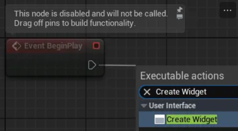
Adding Create Widget Node

Class Setting
- Add Add to Viewport node and connect them.

Adding Add to Viewport Node

Node Connection
- Open the Level Blueprint editor.
- Run the level and confirm that the chat window has been added.

Screen with Chat Window Added
2.2. Implementing Chat Functionality
- Create a new widget blueprint BP_ChatBlock and configure its appearance.
- Configure the widget according to the structure below.
- Widget Element Structure
>> Canvas Panel >> Border - Anchor: Top Left - Position: [x: 0, y: 0] - Size: [x: 640, y: 40] - Alignment: [x: 0, y: 0] - Brush Color: [R: 1, G: 1, B: 1, A: 0.5] >> Text > Name: ChatText > Check Variable - Horizontal Alignment: Left - Vertical Alignment: Center - Font-Size: 20
The appearance upon completion of configuration is as follows.

BP_ChatBlock Configuration
- Widget Element Structure
- Configure the widget according to the structure below.
- Configure the Blueprint for BP_ChatBlock widget following the procedure below.
- Switch to Blueprint Graph mode.

Blueprint Graph Mode
- Configure the SetChatText function.
- Create a function in the Blueprint window.

Function Creation
- Set function parameters in the Details window.

Function Parameter Setting
- Drag ChatText from the variable list in the Blueprint window and select Get ChatText.
- Create and connect SetText (Text) node. Be careful not to accidentally select other items.

Adding SetText Node

Node Connection Complete
- Create a function in the Blueprint window.
- Switch to Blueprint Graph mode.
- Configure the BP_ChatWidget widget following the procedure below.
- Open the BP_ChatWidget Blueprint editor and switch to Designer mode.
- Modify the widget referring to the following.
- Widget Element Structure
-> Canvas Panel -> Canvas Panel -> Scroll Box > Name: ChatBlockArea > Check Variable -> Canvas Panel -> Button > Name: SendButton > Check Variable -> Text Box > Name: ChatTextBox > Check Variable
The appearance after modification is as follows.

BP_ChatWidget Modification Complete
- Widget Element Structure
- Switch the Blueprint editor to Graph mode.
- Configure the PrintChat function.
- Add a function.

Adding PrintChat Function
- Add Create Widget node and specify BP_ChatBlock for the class.
- Add and connect BP_ChatBlock's SetChatText node.
- Drag and add the ChatBlockArea variable.
- Add Add Child node and connect.

PrintChat Function Configuration
- Add a function.
- Implement the chat message sending event.
- Select SendButton from variables and add a click event.

Adding Button Click Event
- Drag and add the ChatTextBox variable and PrintChat function.
- Add Get Text (Text Box) node and connect all.

Chat Send Event Complete
- Select SendButton from variables and add a click event.
- Additional features can be implemented by modifying the Blueprint graph as follows (optional).
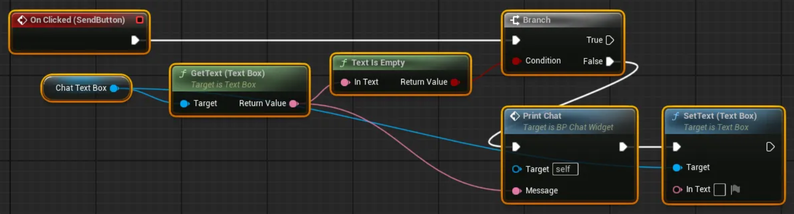
Additional Feature Implementation 1

Additional Feature Implementation 2
- Ignore sending if no message is entered
- Automatically delete the input message after sending
- Auto-scroll chat window to bottom when new chat arrives
- Run the level and confirm that chat functionality has been added.

Chat Function Verification
3. Tạo Chat trực tuyến
Phần này bao gồm triển khai chức năng chat mạng sử dụng ProudNet.
3.1. Công việc dự án Visual Studio
- Add a new empty project chat_pidl in PdnUE5ExampleServer.
- Add two files C2S.PIDL, S2C.PIDL and modify their properties.
- Select "Custom Build Tool" from "General - Item Type" dropdown
- Enter text in "Custom Build Tool - General - Command Line"
C:\"Program Files (x86)"\Nettention\ProudNet\util\PIDL.exe "%(FullPath)" -cpp
- Enter text in "Custom Build Tool - General - Description"
%(Filename).PIDL Compiling...
- Select <Edit…> from "Custom Build Tool - General - Outputs" dropdown and add the following paths in the popup window
%(RootDir)%(Directory)\%(Filename)_common.cpp %(RootDir)%(Directory)\%(Filename)_common.h %(RootDir)%(Directory)\%(Filename)_proxy.cpp %(RootDir)%(Directory)\%(Filename)_proxy.h %(RootDir)%(Directory)\%(Filename)_stub.cpp %(RootDir)%(Directory)\%(Filename)_stub.h
- Enter code in each file.
- Complete Code
- C2S.PIDL
[access=public] global CHAT_C2S 3000 { Chat([in] Proud::String message); } - S2C.PIDL
[access=public] global CHAT_S2C 4000 { SystemChat([in] Proud::String message); BroadcastChat([in] int sender_id, [in] Proud::String message); }
- C2S.PIDL
- Complete Code
- Build the chat_pidl project. You can check the built source code files in the chat_pidl project folder.

PIDL Build Results
- Modify the main.cpp source code of the chat_server project.
- Modifications
#include <iostream> #include <format> #include <memory> #include <ProudNetServer.h> #include "setting.h" + #include "../chat_pidl/S2C_common.h" + #include "../chat_pidl/S2C_common.cpp" + #include "../chat_pidl/S2C_proxy.h" + #include "../chat_pidl/S2C_proxy.cpp" + + #include "../chat_pidl/C2S_common.h" + #include "../chat_pidl/C2S_common.cpp" + #include "../chat_pidl/C2S_stub.h" + #include "../chat_pidl/C2S_stub.cpp" + + + Proud::HostID group_host_id = Proud::HostID_None; + CHAT_S2C::Proxy s2c_proxy; + + struct CHAT_C2S_Stub : public CHAT_C2S::Stub + { + public: + DECRMI_CHAT_C2S_Chat; + }; + + DEFRMI_CHAT_C2S_Chat(CHAT_C2S_Stub) + { + Proud::RmiContext rmi_context; + rmi_context.m_enableLoopback = false; + s2c_proxy.BroadcastChat(group_host_id, rmi_context, (int)remote, message); + std::cout << std::format("Player[{}] say {}\n", (int)remote, StringT2A(message).GetString()); + return true; + } + + CHAT_C2S_Stub c2s_stub; std::shared_ptr<Proud::CNetServer> net_server; int main() { net_server = std::shared_ptr<Proud::CNetServer>(Proud::CNetServer::Create()); net_server->OnClientJoin = [](Proud::CNetClientInfo* clientInfo) { std::cout << "Client[" << (int)clientInfo->m_HostID << "] connected.\n"; + + Proud::HostID list[100]; + int listCount = net_server->GetClientHostIDs(list, 100); + group_host_id = net_server->CreateP2PGroup(list, listCount, Proud::ByteArray()); + + auto message = std::format("Player[{}] has joined.", (int)clientInfo->m_HostID); + Proud::RmiContext rmi_context; + s2c_proxy.SystemChat(group_host_id, rmi_context, message); }; net_server->OnClientLeave = [](Proud::CNetClientInfo* clientInfo, Proud::ErrorInfo* error, const Proud::ByteArray byte_arr) { std::cout << "Client[" << (int)clientInfo->m_HostID << "] disconnected.\n"; + + auto message = std::format("Player[{}] has left the game.", (int)clientInfo->m_HostID); + Proud::RmiContext rmi_context; + s2c_proxy.SystemChat(group_host_id, rmi_context, message); }; + net_server->AttachProxy(&s2c_proxy); + net_server->AttachStub(&c2s_stub); + Proud::CStartServerParameter start_param; start_param.m_protocolVersion = ProudSetting::CHAT::version; start_param.m_tcpPorts.Add(ProudSetting::CHAT::server_port); try { net_server->Start(start_param); } catch (Proud::Exception& error) { std::cout << "Server start failed: " << error.what() << endl; return 0; } std::cout << ("Server started. Enterable commands:\n"); std::cout << ("-q : Quit.\n"); std::string input; while (true) { std::cin >> input; if (input[0] == '-') { if (input == "-q") break; } + else + { + Proud::RmiContext rmi_context; + s2c_proxy.SystemChat(group_host_id, rmi_context, input); + } } std::cout << "Stopping server...\n"; net_server->Stop(); net_server = nullptr; std::cout << "Server stopped.\n"; return 0; } - Complete Code
- main.cpp
#include <iostream> #include <format> #include <memory> #include <ProudNetServer.h> #include "setting.h" #include "../chat_pidl/S2C_common.h" #include "../chat_pidl/S2C_common.cpp" #include "../chat_pidl/S2C_proxy.h" #include "../chat_pidl/S2C_proxy.cpp" #include "../chat_pidl/C2S_common.h" #include "../chat_pidl/C2S_common.cpp" #include "../chat_pidl/C2S_stub.h" #include "../chat_pidl/C2S_stub.cpp" Proud::HostID group_host_id = Proud::HostID_None; CHAT_S2C::Proxy s2c_proxy; struct CHAT_C2S_Stub : public CHAT_C2S::Stub { public: DECRMI_CHAT_C2S_Chat; }; DEFRMI_CHAT_C2S_Chat(CHAT_C2S_Stub) { Proud::RmiContext rmi_context; rmi_context.m_enableLoopback = false; s2c_proxy.BroadcastChat(group_host_id, rmi_context, (int)remote, message); std::cout << std::format("Player[{}] say {}\n", (int)remote, StringT2A(message).GetString()); return true; } CHAT_C2S_Stub c2s_stub; std::shared_ptr<Proud::CNetServer> net_server; int main() { net_server = std::shared_ptr<Proud::CNetServer>(Proud::CNetServer::Create()); net_server->OnClientJoin = [](Proud::CNetClientInfo* clientInfo) { std::cout << "Client[" << (int)clientInfo->m_HostID << "] connected.\n"; Proud::HostID list[100]; int listCount = net_server->GetClientHostIDs(list, 100); group_host_id = net_server->CreateP2PGroup(list, listCount, Proud::ByteArray()); auto message = std::format("Player[{}] has joined.", (int)clientInfo->m_HostID); Proud::RmiContext rmi_context; s2c_proxy.SystemChat(group_host_id, rmi_context, message); }; net_server->OnClientLeave = [](Proud::CNetClientInfo* clientInfo, Proud::ErrorInfo* error, const Proud::ByteArray byte_arr) { std::cout << "Client[" << (int)clientInfo->m_HostID << "] disconnected.\n"; auto message = std::format("Player[{}] has left the game.", (int)clientInfo->m_HostID); Proud::RmiContext rmi_context; s2c_proxy.SystemChat(group_host_id, rmi_context, message); }; net_server->AttachProxy(&s2c_proxy); net_server->AttachStub(&c2s_stub); Proud::CStartServerParameter start_param; start_param.m_protocolVersion = ProudSetting::CHAT::version; start_param.m_tcpPorts.Add(ProudSetting::CHAT::server_port); try { net_server->Start(start_param); } catch (Proud::Exception& error) { std::cout << "Server start failed: " << error.what() << endl; return 0; } std::cout << ("Server started. Enterable commands:\n"); std::cout << ("-q : Quit.\n"); std::string input; while (true) { std::cin >> input; if (input[0] == '-') { if (input == "-q") break; } else { Proud::RmiContext rmi_context; s2c_proxy.SystemChat(group_host_id, rmi_context, input); } } std::cout << "Stopping server...\n"; net_server->Stop(); net_server = nullptr; std::cout << "Server stopped.\n"; return 0; }
- main.cpp
- Modifications
3.2. Unreal Project Work
- Create a C++ class BaseChatWidget that inherits from UserWidget in the Unreal Engine editor.
- Modify the source code of the created BaseChatWidget class.
- Modifications
- BaseChatWidget.h
// Fill out your copyright notice in the Description page of Project Settings. #pragma once #include "CoreMinimal.h" #include "Blueprint/UserWidget.h" #include "BaseChatWidget.generated.h" /** * */ UCLASS() class PDNUE5EXAMPLECLIENT_API UBaseChatWidget : public UUserWidget { GENERATED_BODY() + public: + UFUNCTION(BlueprintImplementableEvent) + void PrintChat(const FText& message); };
- BaseChatWidget.h
- Complete Code
- BaseChatWidget.h
// Fill out your copyright notice in the Description page of Project Settings. #pragma once #include "CoreMinimal.h" #include "Blueprint/UserWidget.h" #include "BaseChatWidget.generated.h" /** * */ UCLASS() class PDNUE5EXAMPLECLIENT_API UBaseChatWidget : public UUserWidget { GENERATED_BODY() public: UFUNCTION(BlueprintImplementableEvent) void PrintChat(const FText& message); };
- BaseChatWidget.h
- Modifications
- Modify the source code of the GissChatNet class.
- Modifications (showing main parts only)
- GissChatNet.h
// Fill out your copyright notice in the Description page of Project Settings. #pragma once #include "CoreMinimal.h" #include "Subsystems/GameInstanceSubsystem.h" #include "GissChatNet.generated.h" /** * */ UCLASS() class PDNUE5EXAMPLECLIENT_API UGissChatNet : public UGameInstanceSubsystem { GENERATED_BODY() + public: + UFUNCTION(BlueprintCallable) + void SendChat(const FText& message); private: virtual void Initialize(FSubsystemCollectionBase& Collection) override; virtual void Deinitialize() override; }; - GissChatNet.cpp (main addition parts)
+ #include "C:/proudnet_ue5_example/PdnUE5ExampleServer/chat_pidl/C2S_common.h" + #include "C:/proudnet_ue5_example/PdnUE5ExampleServer/chat_pidl/C2S_common.cpp" + #include "C:/proudnet_ue5_example/PdnUE5ExampleServer/chat_pidl/C2S_proxy.h" + #include "C:/proudnet_ue5_example/PdnUE5ExampleServer/chat_pidl/C2S_proxy.cpp" + + #include "C:/proudnet_ue5_example/PdnUE5ExampleServer/chat_pidl/S2C_common.h" + #include "C:/proudnet_ue5_example/PdnUE5ExampleServer/chat_pidl/S2C_common.cpp" + #include "C:/proudnet_ue5_example/PdnUE5ExampleServer/chat_pidl/S2C_stub.h" + #include "C:/proudnet_ue5_example/PdnUE5ExampleServer/chat_pidl/S2C_stub.cpp" + + static Proud::HostID pop_group_host_id = Proud::HostID_None; + static CHAT_C2S::Proxy c2s_proxy; + + void UGissChatNet::SendChat(const FText& message) + { + Proud::String message_pstr(*message.ToString()); + Proud::RmiContext context; + context.m_enableLoopback = true; + c2s_proxy.Chat(Proud::HostID_Server, context, message_pstr); + }
- GissChatNet.h
- Modifications (showing main parts only)
- Modify the Blueprint graph of BP_ChatWidget.
- Convert the PrintChat function to an event.

PrintChat Event Conversion
- Change the parent class of BP_ChatWidget to BaseChatWidget.

Parent Class Change
- Modify the event graph when SendButton is clicked.
- Add Get GissChatNet node and Send Chat node

Adding GissChatNet Node
- Replace the existing Print Chat node with Send Chat node.
- Add Get GissChatNet node and Send Chat node
- The final appearance of the BP_ChatWidget Blueprint graph is as follows.

BP_ChatWidget Final Appearance
- Convert the PrintChat function to an event.
3.3. Kiểm tra Chat
- Build và chạy dự án chat_server.
- Run the Unreal Engine project level and verify the chat functionality.

Chat Function Test 1

Chat Function Test 2
4. Triển khai nhân vật Mirage
Phần này bao gồm xây dựng nhân vật Mirage với các tính năng gameplay nâng cao.
4.1. Adding Mirage Blueprint Character
- Duplicate two Blueprint classes.
- Navigate to "All - Content - InfimaGames - FreeFPSTemplate - Core" in the Content Browser.
- Duplicate the two Blueprint classes BP_Character and ABP_Character.
- Rename them to BP_MirageCharacter and ABP_MirageCharacter respectively.
- Open the BP_MirageCharacter Blueprint editor and proceed with the following steps.
- Select CharacterArms in the Components window.
- Change the Anim Class of Animation to ABP_MirageCharacter.
- Set the Skeletal Mesh Asset of the mesh to SKM_Manny_Simple.
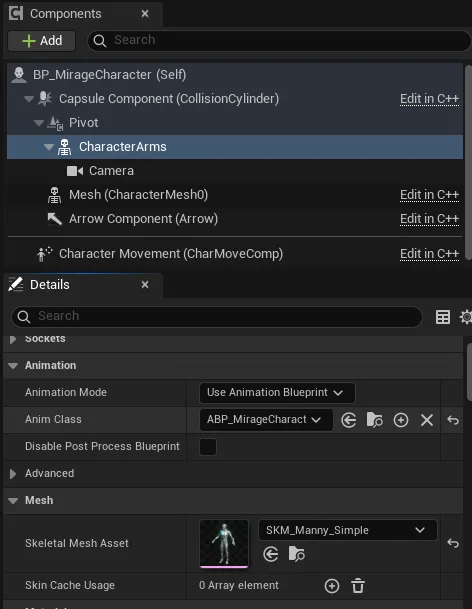
BP_MirageCharacter Configuration
- Place BP_MirageCharacter in the level and run to verify.
If placed as shown below, it is normal based on the current point in time.

Mirage Character Placement Verification
4.2. Movement Animation Mirroring
4.2.1. Animation Variable Duplication
- Implement the C++ class BaseMirageCharacter.
- Create a BaseMirageCharacter class that inherits from Character
- Modify the source code of the created class.
- Modifications
- BaseMirageCharacter.h
// Fill out your copyright notice in the Description page of Project Settings. #pragma once #include "CoreMinimal.h" #include "GameFramework/Character.h" #include "BaseMirageCharacter.generated.h" UCLASS() class PDNUE5EXAMPLECLIENT_API ABaseMirageCharacter : public ACharacter { GENERATED_BODY() public: // Sets default values for this character's properties ABaseMirageCharacter(); protected: // Called when the game starts or when spawned virtual void BeginPlay() override; public: // Called every frame virtual void Tick(float DeltaTime) override; // Called to bind functionality to input virtual void SetupPlayerInputComponent(class UInputComponent* PlayerInputComponent) override; + UFUNCTION(BlueprintCallable, BlueprintImplementableEvent) + void UpdateAnimationParameter(bool aiming, bool closeToWall, bool moving, bool running, float jumpVelocity, FVector3f mouseSwayLocation, FVector3f moveSwayLocation); };
- BaseMirageCharacter.h
- Complete Code
- BaseMirageCharacter.h
// Fill out your copyright notice in the Description page of Project Settings. #pragma once #include "CoreMinimal.h" #include "GameFramework/Character.h" #include "BaseMirageCharacter.generated.h" UCLASS() class PDNUE5EXAMPLECLIENT_API ABaseMirageCharacter : public ACharacter { GENERATED_BODY() public: // Sets default values for this character's properties ABaseMirageCharacter(); protected: // Called when the game starts or when spawned virtual void BeginPlay() override; public: // Called every frame virtual void Tick(float DeltaTime) override; // Called to bind functionality to input virtual void SetupPlayerInputComponent(class UInputComponent* PlayerInputComponent) override; UFUNCTION(BlueprintCallable, BlueprintImplementableEvent) void UpdateAnimationParameter(bool aiming, bool closeToWall, bool moving, bool running, float jumpVelocity, FVector3f mouseSwayLocation, FVector3f moveSwayLocation); };
- BaseMirageCharacter.h
- Modifications
- Set BaseMirageCharacter as the parent class of BP_MirageCharacter
- Implement animation variable duplication using event functions.
- Modify the ABP_Character Blueprint.
- Open the ABP_Character Blueprint editor and navigate to the Event Graph tab.
- Navigate to the end of the BlueprintUpdateAnimation event execution flow.

BlueprintUpdateAnimation Event
- Create and connect a Get Actor Of Class node and specify BP_MirageCharacter for the Class.
- Create and connect an Update Animation Parameter node and connect all variables. All variables can be obtained from the Blueprint's variable list.

Update Animation Parameter Node

Variable Connection Complete
- Modify the BP_MirageCharacter Blueprint.
- Open the BP_MirageCharacter Blueprint editor and navigate to the Event Graph tab.
- Add 4 variables.

Add Variables
- Add an Event UpdateAnimationParameter node.
- Store the event parameters in Blueprint variables.

Parameter Storage
- Disconnect the Event Tick node connection.
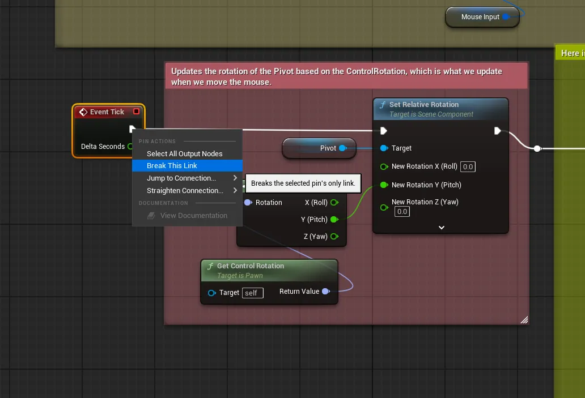
Event Tick Disconnection
- Modify the ABP_MirageCharacter Blueprint.
- Open the ABP_MirageCharacter Blueprint editor and navigate to the Event Graph tab.
- Add a Try Get Pawn Owner node.
- Add a Cast To BP_MirageCharacter node and connect it.
- Get variables from the cast character and store them in the animation Blueprint variables.

Animation Variable Connection
- Modify the ABP_Character Blueprint.
- Run level and verify animation duplication functionality
You can observe the mirage character mimicking motions during actions like running, jumping, and aiming.

Animation Duplication Verification
4.2.2. Corrective Animation Application
- Prepare corrective animation
- Download the animation file.
Invert.fbx (File download required)
- Drag the downloaded file into the Content Browser of the Unreal Editor.
- Specify SKEL_UE5_Mannequin in the Skeleton field of the Animations tab.

Skeleton Assignment
- Click the Import button.
- Delete one of the two generated animations. (Optional)

Animation Deletion
- Download the animation file.
- Modify the corrective animation.
- Open the Blueprint editor for the Inver_Anim_Scene animation sequence.
- Modify the Additive Settings in the Asset Details window.
- Additive Anim Type - Select Mesh Space
- Base Pose Type - Select Selected animation frame
- Base Pose Animation - Select A_FP_AssaultRifle_Idle_Loop

Additive Settings
- Modify the ABP_MirageCharacter Blueprint graph.
- Add Apply Additive node and Invert_Anim_Scene animation node.
- Connect with the A_FP_AssaultRifle_Idle_Loop animation node.

Apply Additive Node Connection
- Perform the same operation for the remaining 4 animation nodes. Use Inver_Anim_Scene and Apply Additive identically for all.

All Animation Node Modifications
- Run level and verify animation correction results
You can confirm that the arm skeleton positions have been corrected to normal ranges.

Animation Correction Results
4.2.3. Applying Leg Animation During Movement
- Modify the part connected to A_FP_AssaultRifle_Run_Loop in the ABP_MirageCharacter - AnimGraph Blueprint graph following the procedure below.
- Add a Layered blend per bone node.
- Modify the details of the added node.
- Settings - Layer Setup - Add two branch filters to Index[0].
- Specify the bone names as thigh_l and thigh_r respectively.

Layered Blend Per Bone Settings
- Connect the existing Apply Additive node to the Base Pose of the above node.
- Add an MM_Run_Fwd animation node and connect it to Blend Poses 0 of the above node.
- Enable animation loop in the details window of the MM_Run_Fwd node.
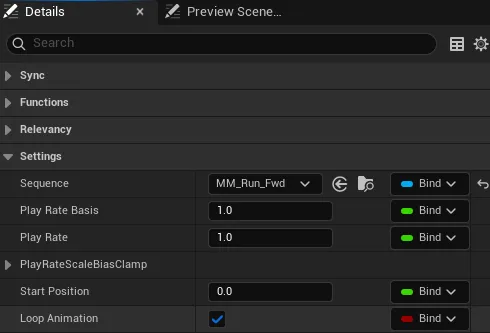
Animation Loop Activation
- The final appearance is as follows. Adjusting the size of comment nodes is optional.

A_FP_AssaultRifle_Run_Loop Final Appearance
- Apply the above process similarly to the remaining 4 animation nodes.
- The Layered blend per bone node settings are identical, so you can copy and use them.
- Instead of the MM_Run_Fwd node, you should use MM_Walk_Fwd or MM_Idle as appropriate.
- After completing all processes, the graph appears as follows.
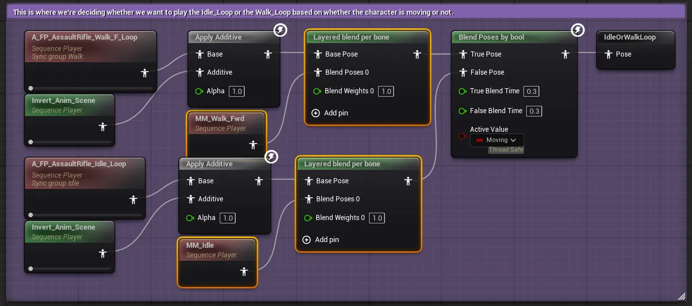
Complete Graph 1
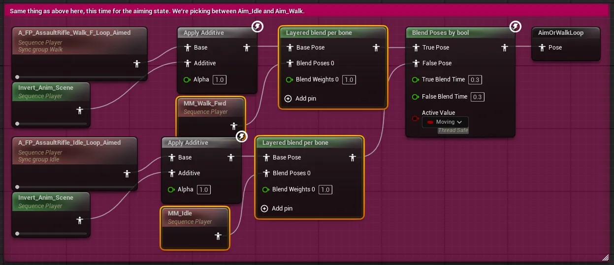Complete Graph 2
- Run level and verify leg animation application
You can confirm that walking and running animations are being played.

Leg Animation Verification
4.3. Action Animation and Motion Duplication
- Modify the source code of the BaseMirageCharacter class.
- Modifications
- BaseMirageCharacter.h
// Fill out your copyright notice in the Description page of Project Settings. #pragma once #include "CoreMinimal.h" #include "GameFramework/Character.h" #include "BaseMirageCharacter.generated.h" UCLASS() class PDNUE5EXAMPLECLIENT_API ABaseMirageCharacter : public ACharacter { GENERATED_BODY() public: // Sets default values for this character's properties ABaseMirageCharacter(); protected: // Called when the game starts or when spawned virtual void BeginPlay() override; public: // Called every frame virtual void Tick(float DeltaTime) override; // Called to bind functionality to input virtual void SetupPlayerInputComponent(class UInputComponent* PlayerInputComponent) override; UFUNCTION(BlueprintCallable, BlueprintImplementableEvent) void UpdateAnimationParameter(bool aiming, bool closeToWall, bool moving, bool running, float jumpVelocity, FVector3f mouseSwayLocation, FVector3f moveSwayLocation); + UFUNCTION(BlueprintCallable, BlueprintImplementableEvent) + void OnFired(); + + UFUNCTION(BlueprintCallable, BlueprintImplementableEvent) + void OnReloaded(); };
- BaseMirageCharacter.h
- Modifications
- Modify the BP_Character Blueprint graph.
- Create a graph that calls the mirage character's reload event when reloading.
- Navigate to the Reload-related area at the top of the graph.

Reload Related Area
- Create a Get Actor Of Class node and specify BP_MirageCharacter for the class.
- Connect to the On Reloaded function node.

On Reloaded Node Addition
- Connect between the Reload and Delay functions.

Reload Event Connection
- Navigate to the Reload-related area at the top of the graph.
- Create a graph that calls the mirage character's fire event when shooting.
- Navigate to the end of the Shoot-related area on the right side of the graph.

Shoot Related Area
- Create a Get Actor Of Class node and specify BP_MirageCharacter for the class.
- Connect to the On Fired function node.
- Connect between the (Current Ammunition) Set and Delay functions.

Shoot Event Connection
- Navigate to the end of the Shoot-related area on the right side of the graph.
- Create a graph that calls the mirage character's reload event when reloading.
- Modify the BP_MirageCharacter Blueprint graph.
- Navigate to the Reload-related area at the top of the graph.
- Connect the On Reloaded event node in front of the Play Montage node

On Reloaded Event Connection
- Navigate to the Shoot-related area on the right side of the graph.
- Connect the On Fired event node in front of the Shoot node

On Fired Event Connection
- Run the level and you can see the mirage character mimicking reload and fire actions.

Action Animation Test
4.4. Position, Rotation and Other Duplications
- Modify the source code of the BaseMirageCharacter class.
- Modifications
- BaseMirageCharacter.h
// Fill out your copyright notice in the Description page of Project Settings. #pragma once #include "CoreMinimal.h" #include "GameFramework/Character.h" #include "BaseMirageCharacter.generated.h" UCLASS() class PDNUE5EXAMPLECLIENT_API ABaseMirageCharacter : public ACharacter { GENERATED_BODY() public: // Sets default values for this character's properties ABaseMirageCharacter(); protected: // Called when the game starts or when spawned virtual void BeginPlay() override; public: // Called every frame virtual void Tick(float DeltaTime) override; // Called to bind functionality to input virtual void SetupPlayerInputComponent(class UInputComponent* PlayerInputComponent) override; + UFUNCTION(BlueprintCallable, BlueprintImplementableEvent) + void UpdateTransform(FVector3f position, FQuat4f orientation, FVector3f linearVelocity, FVector3f angularVelocity, float aimPitch); UFUNCTION(BlueprintCallable, BlueprintImplementableEvent) void UpdateAnimationParameter(bool aiming, bool closeToWall, bool moving, bool running, float jumpVelocity, FVector3f mouseSwayLocation, FVector3f moveSwayLocation); UFUNCTION(BlueprintCallable, BlueprintImplementableEvent) void OnFired(); UFUNCTION(BlueprintCallable, BlueprintImplementableEvent) void OnReloaded(); };
- BaseMirageCharacter.h
- Complete Code
- BaseMirageCharacter.h
// Fill out your copyright notice in the Description page of Project Settings. #pragma once #include "CoreMinimal.h" #include "GameFramework/Character.h" #include "BaseMirageCharacter.generated.h" UCLASS() class PDNUE5EXAMPLECLIENT_API ABaseMirageCharacter : public ACharacter { GENERATED_BODY() public: // Sets default values for this character's properties ABaseMirageCharacter(); protected: // Called when the game starts or when spawned virtual void BeginPlay() override; public: // Called every frame virtual void Tick(float DeltaTime) override; // Called to bind functionality to input virtual void SetupPlayerInputComponent(class UInputComponent* PlayerInputComponent) override; UFUNCTION(BlueprintCallable, BlueprintImplementableEvent) void UpdateTransform(FVector3f position, FQuat4f orientation, FVector3f linearVelocity, FVector3f angularVelocity, float aimPitch); UFUNCTION(BlueprintCallable, BlueprintImplementableEvent) void UpdateAnimationParameter(bool aiming, bool closeToWall, bool moving, bool running, float jumpVelocity, FVector3f mouseSwayLocation, FVector3f moveSwayLocation); UFUNCTION(BlueprintCallable, BlueprintImplementableEvent) void OnFired(); UFUNCTION(BlueprintCallable, BlueprintImplementableEvent) void OnReloaded(); };
- BaseMirageCharacter.h
- Modifications
- Modify the BP_Character Blueprint graph.
- Add a float type AimPitch variable.

AimPitch Variable Addition
- Navigate to the end of the Tick event code.
- Create two route nodes and connect the Branch node's False and Stop Running nodes.

Route Node 1

Route Node 2
- Move the route nodes.

Route Node Movement
- Create a graph that calls BP_MirageCharacter's Update Transform
The completed graph appearance is as follows, and you can check the process below.

Update Transform Graph Complete
View Process
- Create a Get Actor Of Class node and specify BP_MirageCharacter for the class.
- Connect to the Update Transform function node.

Update Transform Node Addition
- Create nodes that get position/rotation values using Get Actor Location and Get Actor Rotation.

Position/Rotation Node Addition
- Connect Get Actor Rotation to the To Quaternion node.

To Quaternion Connection
- Create a Get Character Arms node and connect to nodes that get velocity and angular velocity.

Character Arms Node

Velocity/Angular Velocity Nodes
- Create a Get Control Rotation node and calculate the Pitch rotation value from the return value.
All nodes can be connected through node names.
The multiplication node in the middle can be created with Multiply.

Control Rotation and Pitch Calculation
- Connect all added nodes to the appropriate parameters of Update Transform. The Get Physics Linear Velocity node must have its execution pin connected.
- Add a float type AimPitch variable.
- Modify the BP_MirageCharacter Blueprint graph.
- Add a float type AimPitch variable.
- Add an UpdateTransform event node.
- Add and connect each node appropriate for the event node.

BP_MirageCharacter UpdateTransform Implementation
- Disconnect the Position node connection and add a Make Vector node to connect.
This is a measure to prevent bug behavior in single test environments.

Position Make Vector Connection
- Navigate to the Shoot-related section.
- Configure and connect the graph as follows.

Shoot Related Graph Configuration
- Modify the event graph of the ABP_MirageCharacter Blueprint.
- Add a float type AimPitch variable.
- Retrieve and store values from the cast BP_MirageCharacter.
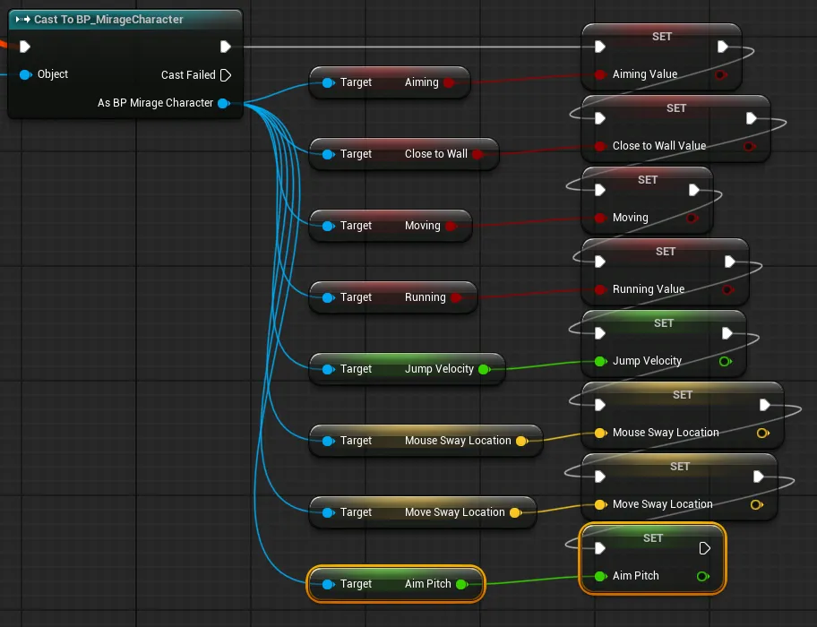
ABP_MirageCharacter AimPitch Variable
- Modify the AnimGraph of the ABP_MirageCharacter Blueprint.
- Navigate to the Mouse Sway related section.

Mouse Sway Related Section
- Add a Transform (Modify) Bone node and connect it in front of the Mouse Sway comment node.
- Create a Rotator with the AimPitch variable value and apply it to the node's Rotation.

Transform Bone Node Application
- Navigate to the Mouse Sway related section.
- Run the level and test the functionality.
The mirage character now aims and fires in the same direction as the player character.

Position Rotation Duplication Test
5. Mirage Character Online Integration
This section covers integrating mirage character with ProudNet networking for multiplayer gameplay.
5.1. Visual Studio Project Work
5.1.1. game_server Project Creation
- Create an empty project game_server in Visual Studio
- Add 3 new items to the game_server project: main.cpp, setting.cpp, setting.h.
- Modify the properties of the game_server project.
- "C/C++ - Language - C++ Language Standard" Select "ISO C++20 Standard (/std:C++20)" from the dropdown
- "C/C++ - General - Additional Include Directories"
Select <Edit…> from the dropdown
Add the following path in the popup window
C:\Program Files (x86)\Nettention\ProudNet\include
- "Linker - General - Additional Library Directories"
Select <Edit…> from the dropdown
Add the following path in the popup window
C:\Program Files (x86)\Nettention\ProudNet\lib\$(Platform)\v140\$(Configuration)
- "Linker - Input - Additional Dependencies"
Select <Edit…> from the dropdown
Add the following filenames in the popup window
ProudNetServer.lib ProudNetClient.lib
- "Build Events - Post-Build Event - Command Line"
Select <Edit…> from the dropdown
Add the following commands in the popup window
xcopy /Y "C:\Program Files (x86)\Nettention\ProudNet\lib\$(Platform)\v140\$(Configuration)\libcrypto-3-x64.dll" "$(OutDir)" xcopy /Y "C:\Program Files (x86)\Nettention\ProudNet\lib\$(Platform)\v140\$(Configuration)\libssl-3-x64.dll" "$(OutDir)"
- Enter code into each source file.
- Complete Code
- setting.h
#pragma once namespace ProudSetting { namespace GAME { extern const ::Proud::Guid version; extern const int server_port; } } - setting.cpp
#include <ProudNetClient.h> #include "setting.h" namespace ProudSetting { namespace GAME { const ::Proud::PNGUID guid = { 0x3ae33249, 0xecc6, 0x4980, { 0xbc, 0x5d, 0x7b, 0xa, 0x99, 0x9c, 0x7, 0x39 } }; const ::Proud::Guid version = ::Proud::Guid(guid); const int server_port = 33338; } } - main.cpp
#include <iostream> #include <format> #include <memory> #include <ProudNetServer.h> #include "setting.h" std::shared_ptr<Proud::CNetServer> net_server; int main() { net_server = std::shared_ptr<Proud::CNetServer>(Proud::CNetServer::Create()); net_server->OnClientJoin = [](Proud::CNetClientInfo* clientInfo) { std::cout << "Client[" << (int)clientInfo->m_HostID << "] connected.\n"; }; net_server->OnClientLeave = [](Proud::CNetClientInfo* clientInfo, Proud::ErrorInfo* error, const Proud::ByteArray byte_arr) { std::cout << "Client[" << (int)clientInfo->m_HostID << "] disconnected.\n"; }; Proud::CStartServerParameter start_param; start_param.m_protocolVersion = ProudSetting::GAME::version; start_param.m_tcpPorts.Add(ProudSetting::GAME::server_port); try { net_server->Start(start_param); } catch (Proud::Exception& error) { std::cout << "Server start failed: " << error.what() << endl; return 0; } std::cout << ("Server started. Enterable commands:\n"); std::cout << ("-q : Quit.\n"); std::string input; while (true) { std::cin >> input; if (input[0] == '-') { if (input == "-q") break; } } std::cout << "Stopping server...\n"; net_server->Stop(); net_server = nullptr; std::cout << "Server stopped.\n"; return 0; }
- setting.h
- Complete Code
5.1.2. game_pidl Project Creation
- Add a new empty project game_pidl in PdnUE5ExampleServer.
- Add file P2P.PIDL and modify its properties.
- "General - Item Type" Select "Custom Build Tool" from the dropdown
- "Custom Build Tool - General - Command Line"
Enter text
C:\"Program Files (x86)"\Nettention\ProudNet\util\PIDL.exe "%(FullPath)" -cpp
- "Custom Build Tool - General - Description"
Enter text
%(Filename).PIDL Compiling...
- "Custom Build Tool - General - Outputs"
Select <Edit…> from the dropdown
Add the following paths in the popup window
%(RootDir)%(Directory)\%(Filename)_common.cpp %(RootDir)%(Directory)\%(Filename)_common.h %(RootDir)%(Directory)\%(Filename)_proxy.cpp %(RootDir)%(Directory)\%(Filename)_proxy.h %(RootDir)%(Directory)\%(Filename)_stub.cpp %(RootDir)%(Directory)\%(Filename)_stub.h
- Enter code into the file.
- Complete Code
- P2P.PIDL
[access=public] global GAME_P2P 3000 { Transform([in] Proud::CharacterTransformData transformData); AnimationParams([in] Proud::CharacterAnimationParams animationParams); Action([in] Proud::CharacterAction actionId); }
- P2P.PIDL
- Complete Code
- Build the game_pidl project.
5.1.3. game_server Project Source Code Modification
- Modify the source code of the game_server project.
- Apply modifications to add P2P group management functionality.
- Add data structures and serialization functions to setting.h and setting.cpp.
5.2. Unreal Project Work
- GissGameNet C++ Class Creation
- Create a C++ class GissGameNet that inherits from GameInstanceSubsystem.
- Modify the source code of the GissGameNet class.
- GissGameNet.h
// Fill out your copyright notice in the Description page of Project Settings. #pragma once #include "CoreMinimal.h" #include "Subsystems/GameInstanceSubsystem.h" #include "GissGameNet.generated.h" /** * */ UCLASS() class PDNUE5EXAMPLECLIENT_API UGissGameNet : public UGameInstanceSubsystem { GENERATED_BODY() public: UFUNCTION(BlueprintCallable) void UpdateCharacterTransform(FVector3f position, FQuat4f rotation, FVector3f linearVelocity, FVector3f angularVelocity, float aimPitch); UFUNCTION(BlueprintCallable) void UpdateCharacterAnimationParameter(bool aiming, bool closeToWall, bool moving, bool running, float jumpVelocity, FVector3f mouseSwayLocation, FVector3f moveSwayLocation); UFUNCTION(BlueprintCallable) void SendCharacterFired(); UFUNCTION(BlueprintCallable) void SendCharacterReloaded(); private: virtual void Initialize(FSubsystemCollectionBase& Collection) override; virtual void Deinitialize() override; };
- GissGameNet.h
- Modify the BP_Character Blueprint graph.
- Replace the graph that calls BP_MirageCharacter's Update Transform with a graph that calls GissGameNet's Update Character Transform.
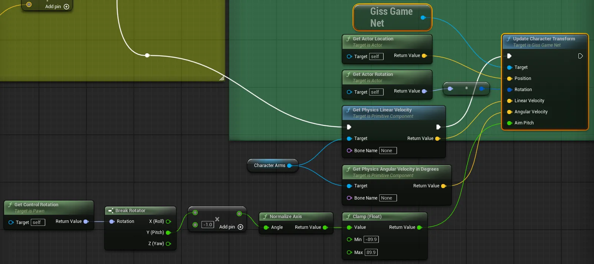
Update Character Transform Change
- Replace the graph that calls BP_MirageCharacter's On Fired with a graph that calls GissGameNet's Send Character Fired.

Send Character Fired Change
- Replace the graph that calls BP_MirageCharacter's On Reloaded with a graph that calls GissGameNet's Send Character Reloaded.

Send Character Reloaded Change
- Replace the graph that calls BP_MirageCharacter's Update Transform with a graph that calls GissGameNet's Update Character Transform.
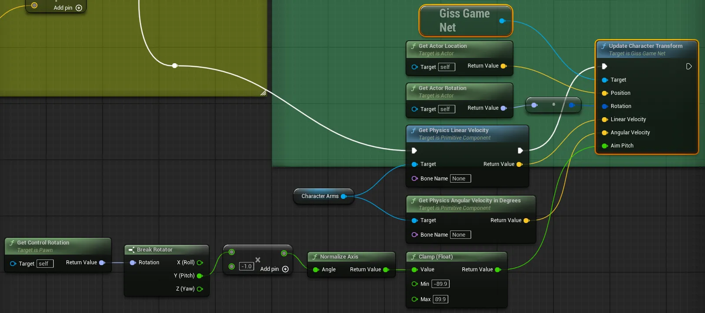
- Modify the event graph of the ABP_Character Blueprint.
- Replace the graph that calls BP_MirageCharacter's Update Animation Parameter with a graph that calls GissGameNet's Update Character Animation Parameter.

Update Character Animation Parameter Change
- Replace the graph that calls BP_MirageCharacter's Update Animation Parameter with a graph that calls GissGameNet's Update Character Animation Parameter.
- After building and running the server, when running the level, you can confirm the same results as before the integration work.
6. Build và kiểm tra dự án cuối cùng
Phần này bao gồm hoàn thiện dự án, build và quy trình kiểm tra toàn diện.
6.1. Sửa đổi mã kiểm tra
- Modify the BaseMirageCharacter class code.
- Add SetId and GetId functions for character ID management.
- Modify the GissGameNet class code.
- Implement an ID-based management system for character identification in multiplayer environments.
- Add functionality to automatically create mirage characters when P2P members join.
- Modify to disable loopback so that one's own actions are not sent back to oneself.
- Modify the BP_MirageCharacter Blueprint class.
- Reconnect the Position of the Update Transform event directly to Set Actor Location.

Position Direct Connection
- Reconnect the Position of the Update Transform event directly to Set Actor Location.
- Remove the BP_MirageCharacter instance from the Outliner window in the Level Editor.
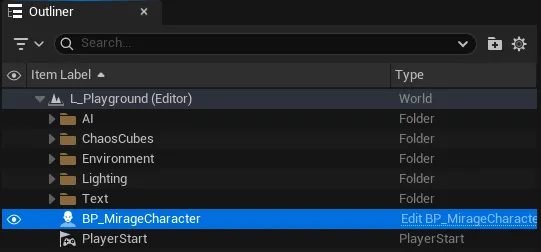
MirageCharacter Instance Removal
6.2. Project Build
- Build tệp thực thi Server
- Thay đổi cấu hình build thông qua dropdown ở đầu Visual Studio.

Thay đổi cấu hình Build
- Build các dự án chat_server và game_server tương ứng.
- Bạn có thể kiểm tra các tệp thực thi đã build trong thư mục con của solution.

Tệp thực thi đã Build
- Thay đổi cấu hình build thông qua dropdown ở đầu Visual Studio.
- Build tệp thực thi Client
- Bạn có thể build dự án Unreal thông qua nút bên cạnh thực thi level trong Unreal Editor.

Build dự án Unreal
- Bạn có thể kiểm tra các tệp đã build thông qua đường dẫn được chỉ định.
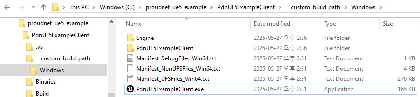
Tệp Client đã Build
- Bạn có thể build dự án Unreal thông qua nút bên cạnh thực thi level trong Unreal Editor.
6.3. Kiểm tra
- Chạy chat_server.exe và game_server.exe đã build từ dự án server.
- Chạy PdnUE5ExampleClient.exe từ thư mục Windows đã build trong dự án Unreal. Hãy cẩn thận vì điều này có thể gây tải nặng cho máy tính tùy thuộc vào thông số kỹ thuật PC của bạn.
- Bạn có thể thấy hai client sử dụng chat server và game server.

Kết quả kiểm tra cuối cùng